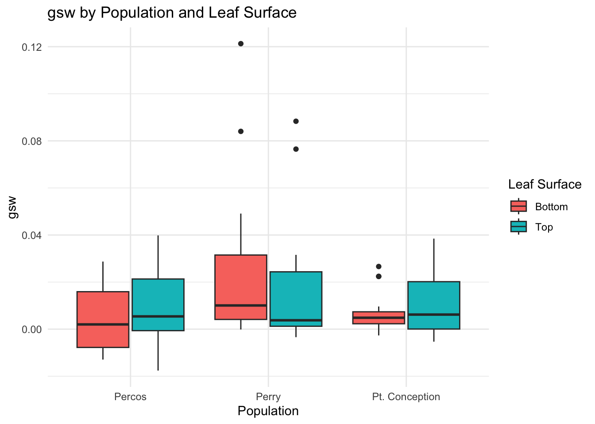
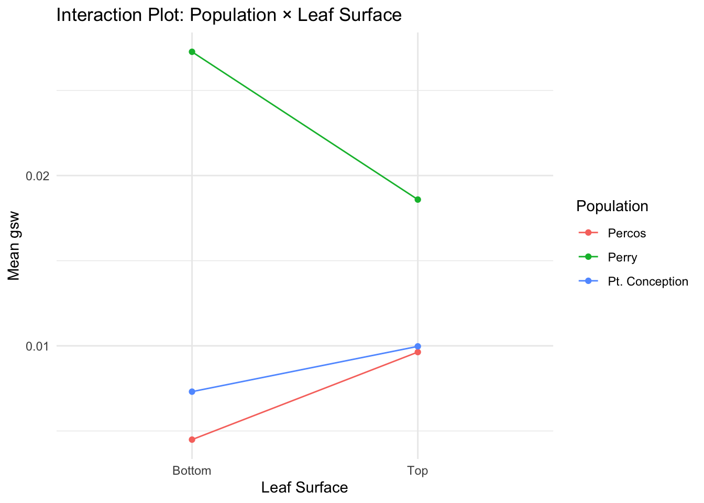

# Load the data
data <- read.csv("~/GitHub/CApoppy/data/processed/Combined_3pops_march.csv", skip = 1, header = TRUE)
# Clean the data: remove NA values and ensure factor types
data_clean <- data %>%
filter(!is.na(gsw), !is.na(Population), !is.na(Plant), !is.na(`Top.or.Bottom`)) %>%
mutate(
Population = factor(Population),
TopBottom = factor(`Top.or.Bottom`)
)Comparison of gsw by Population and Leaf Surface
Load Data
Summary Statistics
data_clean %>%
group_by(Population, TopBottom) %>%
summarise(
mean_gsw = mean(gsw),
sd_gsw = sd(gsw),
n = n(),
.groups = 'drop'
)# A tibble: 6 × 5
Population TopBottom mean_gsw sd_gsw n
<fct> <fct> <dbl> <dbl> <int>
1 Percos Bottom 0.00449 0.0133 15
2 Percos Top 0.00963 0.0163 15
3 Perry Bottom 0.0273 0.0346 15
4 Perry Top 0.0186 0.0281 15
5 Pt. Conception Bottom 0.00731 0.00878 16
6 Pt. Conception Top 0.00997 0.0127 16Boxplot of gsw by Population and Leaf Surface
ggplot(data_clean, aes(x = Population, y = gsw, fill = TopBottom)) +
geom_boxplot(position = position_dodge(width = 0.8)) +
labs(
title = "gsw by Population and Leaf Surface",
x = "Population", y = "gsw", fill = "Leaf Surface"
) +
theme_minimal()
Two-Way ANOVA
anova2 <- aov(gsw ~ Population * TopBottom, data = data_clean)
summary(anova2) Df Sum Sq Mean Sq F value Pr(>F)
Population 2 0.00462 0.0023098 5.292 0.0068 **
TopBottom 1 0.00000 0.0000012 0.003 0.9583
Population:TopBottom 2 0.00082 0.0004093 0.938 0.3955
Residuals 86 0.03754 0.0004365
---
Signif. codes: 0 '***' 0.001 '**' 0.01 '*' 0.05 '.' 0.1 ' ' 1Post-Hoc Comparison (Tukey HSD)
# Tukey post-hoc for interaction effects
TukeyHSD(anova2) Tukey multiple comparisons of means
95% family-wise confidence level
Fit: aov(formula = gsw ~ Population * TopBottom, data = data_clean)
$Population
diff lwr upr p adj
Perry-Percos 0.015866538 0.003001107 0.028731969 0.0115817
Pt. Conception-Percos 0.001576323 -0.011086490 0.014239137 0.9526005
Pt. Conception-Perry -0.014290214 -0.026953027 -0.001627401 0.0230221
$TopBottom
diff lwr upr p adj
Top-Bottom -0.0002283262 -0.008888504 0.008431852 0.9583219
$`Population:TopBottom`
diff lwr
Perry:Bottom-Percos:Bottom 0.0227765083 0.0005386953
Pt. Conception:Bottom-Percos:Bottom 0.0028161494 -0.0190714399
Percos:Top-Percos:Bottom 0.0051406639 -0.0170971490
Perry:Top-Percos:Bottom 0.0140972311 -0.0081405819
Pt. Conception:Top-Percos:Bottom 0.0054771614 -0.0164104279
Pt. Conception:Bottom-Perry:Bottom -0.0199603589 -0.0418479482
Percos:Top-Perry:Bottom -0.0176358443 -0.0398736573
Perry:Top-Perry:Bottom -0.0086792772 -0.0309170902
Pt. Conception:Top-Perry:Bottom -0.0172993468 -0.0391869361
Percos:Top-Pt. Conception:Bottom 0.0023245145 -0.0195630748
Perry:Top-Pt. Conception:Bottom 0.0112810817 -0.0106065077
Pt. Conception:Top-Pt. Conception:Bottom 0.0026610120 -0.0188706578
Perry:Top-Percos:Top 0.0089565671 -0.0132812458
Pt. Conception:Top-Percos:Top 0.0003364975 -0.0215510918
Pt. Conception:Top-Perry:Top -0.0086200696 -0.0305076589
upr p adj
Perry:Bottom-Percos:Bottom 0.045014321 0.0414890
Pt. Conception:Bottom-Percos:Bottom 0.024703739 0.9990009
Percos:Top-Percos:Bottom 0.027378477 0.9843677
Perry:Top-Percos:Bottom 0.036335044 0.4411584
Pt. Conception:Top-Percos:Bottom 0.027364751 0.9777615
Pt. Conception:Bottom-Perry:Bottom 0.001927230 0.0946107
Percos:Top-Perry:Bottom 0.004601969 0.2007209
Perry:Top-Perry:Bottom 0.013558536 0.8642380
Pt. Conception:Top-Perry:Bottom 0.004588242 0.2038431
Percos:Top-Pt. Conception:Bottom 0.024212104 0.9996071
Perry:Top-Pt. Conception:Bottom 0.033168671 0.6636652
Pt. Conception:Top-Pt. Conception:Bottom 0.024192682 0.9991779
Perry:Top-Percos:Top 0.031194380 0.8479377
Pt. Conception:Top-Percos:Top 0.022224087 1.0000000
Pt. Conception:Top-Perry:Top 0.013267520 0.8597109Interaction Plot
gginteraction <- ggplot(data_clean, aes(x = TopBottom, y = gsw, color = Population, group = Population)) +
stat_summary(fun = mean, geom = "line") +
stat_summary(fun = mean, geom = "point") +
labs(title = "Interaction Plot: Population × Leaf Surface", x = "Leaf Surface", y = "Mean gsw") +
theme_minimal()
gginteraction